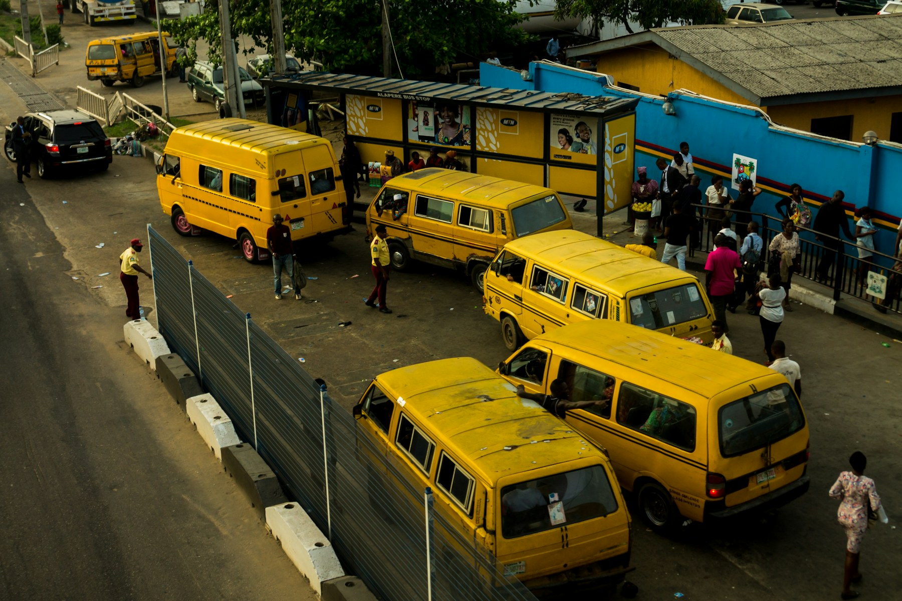

Lagos is loud.

Noise off.
Hybrid Active
Noise Cancellation
Noise Cancellation
52dB ANCHybrid noise cancelling
Deep low endBig-speaker bass

Space on.
The city keeps going.
You don't have to hear it.
You don't have to hear it.
SpaceBuds 2
Noise Off, Space On